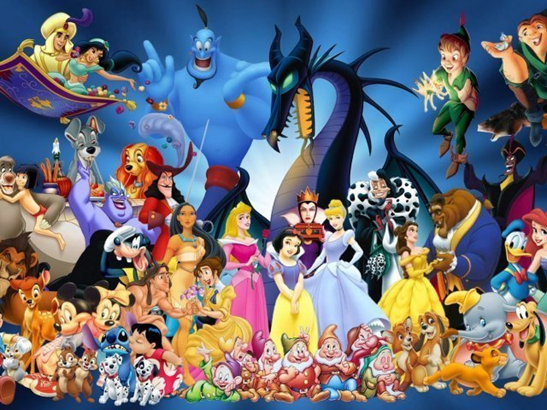

1.Mickey Mouse, o camundongo mais famoso do mundo, será sempre lembrado como um dos personagens mais memoráveis da Disney. Mas você sabia que suas primeiras palavras em uma animação foram “cachorro-quente”?
2. O primeiro dublador de Mickey Mouse foi ninguém mais, ninguém menos do que o próprio Walt Disney!
3. Durante mais de 30 anos, Russi Taylor e Wayne Allwine foram os dubladores responsáveis por darem voz aos personagens Minnie e Mickey Mouse, respectivamente. A melhor parte é que, além de seus personagens terem sido um casal na ficção, os dubladores foram também casados na vida real!
4. Apesar de bonitas e inspiradoras, muitas histórias da Disney são marcadas por tragédias e dramas. Por exemplo, é possível repararmos que apenas quatro das princesas possuem os pais vivos em suas histórias: Mulan, Rapunzel, Aurora e Mérida.
5. Nas tramas da Disney, também, é super comum vermos vilãs mulheres. Gaston, do filme “A Bela e a Fera”, foi o primeiro antagonista homem a aparecer em um filme de princesas da marca.
6. Pocahontas é a única princesa da Disney que possui uma tatuagem, devido a sua cultura e costumes de sua aldeia. Você já tinha reparado nesse detalhe?
Clássicos da Disney
Branca de Neve e os Sete Anões (1937) Fantasia (1940) Dumbo (1941) Bambi (1942) Cinderela (1950) Alice no País das Maravilhas (1951) Peter Pan (1953) A Dama e o Vagabundo (1955)
Filmes de princesa
A Bela Adormecida (1959) A Pequena Sereia (1989) A Bela e a Fera (1991) Aladdin (1992) Aladdin: O Retorno de Jafar (1994) Pocahontas (1995)
Filmes de animação
As Aventuras de Ichabod e Sr. Sapo (1949) 101 Dálmatas (1961) Mogli - O Menino Lobo (1967) Robin Hood As Aventuras do Ursinho Puff Bernardo e Bianca
Outros filmes da Disney
Toy Story (1995) Frozen (2013) Up (2009) Tarzan (1999) Monstros S.A. (2001) Carros (2006) Procurando Nemo (2003)